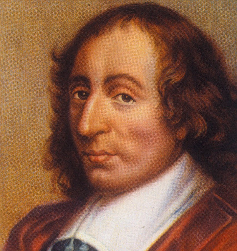

Biografia
Blaise Pascal nacque il 19 Giugno 1623 a Clermont Ferrand. Il giovane Blaise era già molto
bravo in matematica e in fisica, talmente bravo che che fu ammesso alle riunioni scientifiche a
Marin Mersenne in cui partecipavano i migliori ricercatori dell’epoca.
Nel 1640 Pascal scrive la sua prima opera scientifica sulle sezioni coniche e a soli 18 anni dopo
inventa la Pascalina per aiutare il padre.
Pascal decise di lasciare da parte la matematica per un periodo della sua vita, dopo qualche
anno scrisse la sua ultima teoria: il Traité du triangle arithmétique in cui spiega il triangolo
aritmetico. Pascal abbandonò definitivamente gli studi della matematica e della fisica dopo un
brutto incidente.
Dopodiché si dedicò completamente alla filosofia e alla teologia.
Pascal scrisse le sue prime lettere sulle dispute della Sorbona, mentre scriveva queste lettere
decise che voleva scrivere una grande opera apologetica sul cristianesimo.
Il 19 Agosto del 1662 Pascal morì; le cause della sua morte non furono mai state chiarite: si
pensa a una Tubercolosi o un tumore allo stomaco.
Invenzioni
La Pascalina è uno strumento di calcolo, si dice che sia il primo calcolatore inventato,fu
inventata nel 1644 da Blaise Pascal per aiutare il padre nel suo lavoro.
Questo calcolatore ha la funzione di sommare e sottrarre numeri con meno di 10 cifre.
La Pascalina funziona con il concetto del riporto automatico in cui la rotazione di una ruota
sblocca un pezzo di rotazione della ruota successiva. Per esempio dopo il decimo giro della
ruota delle unità si sblocca un decimo di giro della ruota delle decine

Ritratto di Blaise Pascal